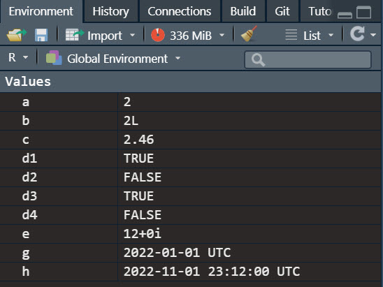

Chapter 2 - Getting started with R
Learning objectives
- Installing R and RStudio
- Navigating the RStudio interface
- Installing packages
- Writing basic commands
- Understanding R functions
- Understanding R data types
- Understanding R objects
- Understanding conditional statements
- Understanding loops
- Understanding vectorization
Setting up R
Installing R and Rstudio
RStudio is an open source
Visit the Comprehensive R Archive Network (r-project.org) and download the appropriate version of R based on your operating system.
Run the file that you just downloaded to install R. You can accept all the default installation parameters, or customize your installation if you so desire.
Download the RStudio IDE - RStudio. Again, choose the appropriate version based on your operating system.
Run the file that you just downloaded to install RStudio. You can accept all the default installation parameters, or customize your installation if you so desire.
Explore RStudio
When you open R studio. You should see three panels as in the image below (note that your background will probably be white. You can select your theme in Tools - Global options - Appearance. My preferred theme is “Pastel On Dark.”

First steps in R
R scripts
R scripts are basic text file with a “.R” extension in which you can write code (that R can execute) and comments (that R will not execute and are meant to help you and others understand your code and script. The # character indicates the beginning of a comment.
# The following code tells R to calculate the value of 1 + 1 and return the result.
1+1## [1] 2When writing scripts, it is always a good practice to include metadata at the beginning including useful information such as the name of the project, the purpose of the script, your name, and the date of the last update.
# ***********************************************
# Project: Introduction to data science
# Purpose: This is an example of a basic script
# Author: Philippe Mongeon
# Date: 2021-12-29
# ***********************************************Working directory
Your working directory is the default folder from your computer where R will read and save files. The default working directory will typically your R/ folder. You can change that in Tools - Global options - General, but it’s a better approach to start your scripts with a setwd() command to specify the default folder for the project that you are working on.
# ***********************************************
# Project: Introduction to data science
# Purpose: This is an example of a basic script
# Author: Philippe Mongeon
# Date: 2021-12-29
# ***********************************************
# Set working directory
setwd("c:/users/philippe/my documents/R/data science/chapter 2/")Functions
R functions are called like this: some_function(some argument, some other argument, some other argument, …). The arguments are placeholder for which you provide values when calling the functions. Some functions contain many arguments and some functions contain none. Typically some functions will have default values for most of the arguments, but require that you provide values for the other arguments that don’t have default values. In the code chunk above, setwd(dir) is the function, and “c:/users/philippe/my documents/R/data science/chapter 2/” is the value passed to the argument dir.
Arguments have a specific order, so you don’t have to enter the arguments name if you know the order. Usually we never write the argument name for functions with a single argument, and we never write the name of the first argument in multi-argument functions.
# This prints the string "hello world"
print(x="hello world")## [1] "hello world"# This also prints the string "hello world"
print("hello world")## [1] "hello world"The print function is the default option that is called if your code does not include a function. So you can print values, the result of operations, or the content of an object without explicitly calling the print() function.
# This prints the string "hello world"
"hello world"
# This prints the result of the operation 1+3
1+3
# This prints the content of the object called "data"
dataDocumentation
If you need to consult the documentation of a function to learn how to use it, there is usually excellent documentation with examples online. You can also access the official documentation directly in RStudio. Here is how:
# This opens the documentation for the function setwd() in the Help panel.
?setwd()
# This does the same thing.
help(setwd)Packages
Packages are groups of functions that you can install and load so that you an use them in your code Your basic R installation comes with a lot of pre-installed packages and functions that are automatically loaded when you open RStudio.
There are a lot of packages out there that offer sets of functions that are usually designed for specific purposes. Functions in some packages use functions from other packages so don’t be surprised if you try to install one package but end up installing more than one.
The tidyverse, which we will explore in the next chapter, is one of these “meta-packages” that installs and loads a collection of packages and their functions.
install.packages("tidyverse")Note: You only need to install packages once, and they can then be used in all your scripts without re-installing them.
Packages provide functions for you to use. But first you must load the package using the library()function. I recommend loading all the packages required for your script at the beginning, after you set the working directory. Let’s update our script.
# ***********************************************
# Project: Introduction to data science
# Purpose: This is an example of a basic script
# Author: Philippe Mongeon
# Date: 2021-12-29
# ***********************************************
# Set working directory
setwd("c:/philippe/my documents/R/data science/chapter 2/")
# Load packages.
library(tidyverse)0.0.0.1 Writing your own functions
You can write your own functions and then use them in your code. Here’s and example of a simple, not so useful, function that returns a the square of a number.
# square is the name of the function.
# x is the argument (information that the user of the function will need to provide.)
# the code between the curly brakets is what the function will do when called.
square <- function(x) {
x^2
}Then we can call the function and see what happens
# calculate the square of 5
square(5)## [1] 25You can provide default values for the arguments in your functions. Let’s try that with a new function where the use provides both the number and the exponent, with no default value for the number (x) and 1 as the default exponent (exp).
exponent <- function(x, exp = 1) {
x^exp
}
# Then we can all he function.
exponent(3,3)## [1] 27By the way, when you create a function it appears under your environment tab in RStudio.

That’s it, now you know how to create a function and specify its arguments with their default value is any. There no limit to the number of statements that the body of your function, so you can make them as complex as you want.
Executing code
Ctrl + Enter will execute the code where your cursor is located and then move the cursor to the next line with code or a comment. If your cursor is in between codes, R will execute the next code in the script and then move the cursor to the next line with code or a comment. You can also select multiple lines of codes to execute at the same time with Ctrl + Enter (R will still execute them one after the other). Instead of writing scripts, you can write code directly in the console and execute it with Enter.
numbers and strings
There are essentially two types of values that R works with: numbers and character strings, and R can tell the difference because we write character strings in brackets (both single and double brackets work).
# this is the number 99
99 ## [1] 99# this is the character string "99"
"99" ## [1] "99"Doing the math
When working with numbers, you can use several arithmetic operators and use R as a calculator.
# additions
1+1
# substractions
4-1
# multiplications
4*2
# division
8/2
# modulo
11 %% 2 # modulo
# exponant
2^4Objects
Objects are containers of data with different data types and data structures. You can create as many object as you want and store any data that you want in them. Let’s create two objects containing a number, and then write a command that multiplies the content of both objects.
# create an object called "a" containing the value 2
a <- 2
# create an object caled "b" containing the value 4
b = 4
# multiplies the value of object a and b and stores the results in object c
c <- a*b
# prints the content of the object c
c ## [1] 8Excellent. Now you know how to store values in objects and use them in your statements. Let’s now take a deeper look at the different data types and structures that R objects can use.
Data types
# these lines of code create objects (a to e) containing a value of a specified numeric type.
a <- as.numeric(2)
b = as.integer(2)
c = as.numeric(2.46)
e = as.complex(12)
# this creates an object containing a logical value (TRUE or FALSE).
# Logical values are stored as 0 (FALSE) and 1 (TRUE).
# Note that ANY number other than 0 will be considered TRUE and converted to 1.
# Also note that T and F are shorcuts for TRUE and FALSE.
d1 = as.logical(42)
d2 = as.logical(0)
d3 = TRUE
d4 = FALSE
# This creates an object f storing the character (not the value) 1.
f <- as.character("1")
# Dates are also a useful data type, the lubridate package has great functions to
# work with dates. They are stored as numbers, but rendered as dates.
library(lubridate)
g <- as_date("2022-01-01")
h <- as_datetime("2022-11-01 23:12:00")After running this code, your environment panel contains all the objects created, with their value, like this:

Data structures
All the objects created in the last example are storing a single value. But objects can also contain multiple values organized in different kind of structures. Let’s go through those structures.
Vectors
Vectors are created using the function c() and contain a uni-dimensional sequence of values of the same type.
c("Lucy","Matthew","Ricardo","Adrian","Mathilda", "Beyoncé")## [1] "Lucy" "Matthew" "Ricardo" "Adrian" "Mathilda" "Beyoncé"Matrices
A matrix is a bi-dimensional representation of a vector. You can specify the number of rows and columns for your matrix as in the example below.
matrix(c("Lucy","Matthew","Ricardo","Adrian","Mathilda", "Beyoncé"), nrow = 2, ncol = 3)## [,1] [,2] [,3]
## [1,] "Lucy" "Ricardo" "Mathilda"
## [2,] "Matthew" "Adrian" "Beyoncé"Factors
Factors are another special type of vectors. Think of them as categorical variables that can have a distinct number of values (called levels). Say you have a vector of values representing the transmission type of cars. The two levels would be “automatic” and “manual.”
transmission <- as.factor(c('manual',"manual","automatic","automatic","automatic","manual"))
transmission## [1] manual manual automatic automatic automatic manual
## Levels: automatic manualFactors are also memory efficient because the values are stored as number. As you can see in this screenshot of my R objects, the values are recorded as 2, 2, 1, 1, 1, 2.
Lists
Unlike vectors, lists can contain any combination of values or objects f all kinds (including vectors, matrices, data frames, factors or other lists).
list(1,"Banana",c("a","b","c"),"Wayne Gretzky")## [[1]]
## [1] 1
##
## [[2]]
## [1] "Banana"
##
## [[3]]
## [1] "a" "b" "c"
##
## [[4]]
## [1] "Wayne Gretzky"Data frames and tibbles
Data frames (and tibbles, which are essentially data frames with improved features) are tabular structures (think of an Excel spreadsheet) that organize data in rows and columns. The columns of a data frame are essentially vectors. A single column must store data (or object) of the same type, but the columns can have different data types. In the code below, we create a new data frame by specifying the column names and the data types.
data.frame(first_name = as.character(c("Rob","June","Lise")),
last_name = as.character(c("Murphy","Jones","MacFly")),
status = factor(c("Single","Divorced","Married"), levels = c("Single","Married","Divorced")),
age = as.integer(c(42,30,34)))## first_name last_name status age
## 1 Rob Murphy Single 42
## 2 June Jones Divorced 30
## 3 Lise MacFly Married 34library(tidyverse)
t<- tibble(first_name = as.character(c("Rob","June","Lise")),
last_name = as.character(c("Murphy","Jones","MacFly")),
status = factor(c("Single","Divorced","Married"), levels = c("Single","Married","Divorced")),
age = as.integer(c(42,30,34)))
t[1,1]## # A tibble: 1 x 1
## first_name
## <chr>
## 1 RobSubsetting data
You can one or multiple elements from an R object by providing its coordinates in brackets [row number, column number] . When the rows or columns have names, the elements can be called by name with the dollar sign ($) Here’s an example.
# Let's create a tibble called t
t <- tibble(first_name = as.character(c("Rob","June","Lise")),
last_name = as.character(c("Murphy","Jones","MacFly")),
status = factor(c("Single","Divorced","Married"), levels = c("Single","Married","Divorced")),
age = as.integer(c(42,30,34)))
# Select the first column
t[,1]## # A tibble: 3 x 1
## first_name
## <chr>
## 1 Rob
## 2 June
## 3 Lise# Select the first row
t[1,]## # A tibble: 1 x 4
## first_name last_name status age
## <chr> <chr> <fct> <int>
## 1 Rob Murphy Single 42# Select the element in the second row and the second column
t[2,2]## # A tibble: 1 x 1
## last_name
## <chr>
## 1 Jones# Select the first and second rows
t[1:2,1]## # A tibble: 2 x 1
## first_name
## <chr>
## 1 Rob
## 2 June# Select the first and third rows
t[c(1,3),]## # A tibble: 2 x 4
## first_name last_name status age
## <chr> <chr> <fct> <int>
## 1 Rob Murphy Single 42
## 2 Lise MacFly Married 34# Select the first name column
t$first_name## [1] "Rob" "June" "Lise"# Select the first name of the second observation
t$first_name[2]## [1] "June"# Select the fist name of the second observations (the other way around)
t[2,]$first_name## [1] "June"Subsetting from lists is a little different. Let’s take a look.
# Let's create a list called l and print it.
l <- list(1,"Banana",c("a","b","c"),"Wayne Gretzky", list(c('x',"y","z")))We can see coordinates of the list’s elements are in double brackets, and then the coordinates of the object within the list are in single brackets. Let’s subset some of the elements to see how it works.
# select the third element of the list
l[[3]]## [1] "a" "b" "c"# select the second element of the third element of the list
l[[3]][2]## [1] "b"# select the second element of the first element in the fift element of the list
l[[5]][[1]][2]## [1] "y"Logical operators
Logical statements compare two values and return 0 (FALSE) or 1 (TRUE).
| Operator | Meaning |
|---|---|
| < | less than |
| <= | less than or equal to |
| > | greater than |
| >= | greater than or equal to |
| == | equal to |
| != | not equal to |
You can also combine conditions with the Boolean operators AND ( && ), OR ( || ), and NOT ( ! ).
TRUE || FALSE # returns TRUE
TRUE && FALSE # returns FALSE
!TRUE # returns FALSE
!FALSE # returns TRUE
TRUE && !FALSE # returns TRUEConditional statements
Conditional statements allow you to tell R to do something if a certain condition is met. This is done with the if (condition). You can also tell R what to do if the condition is not met, using else. The syntax is: if (condition) {code to execute} else {code to execute}. I recommend breaking the code over multiple lines like in the code below. Note that the else must be on the same line as the closing curly bracket from the previous section of the statement.
if (1+1==3) {
print("1 + 1 equals 3")
} else {
print ("1 + 1 is not equal to 3")
}## [1] "1 + 1 is not equal to 3"You can chain more conditional statements with else if, like this:
donuts_jim <- 6
donuts_lucy <- 3
if (donuts_jim < donuts_lucy) {
print("Jim had fewer donuts than Lucy")
} else if (donuts_jim > donuts_lucy) {
print("Jim had more donuts than Lucy")
} else {
print("Jim had as many donuts as Lucy")
}## [1] "Jim had more donuts than Lucy"Loops and vectorization
Loops are generally used to run the same statement multiple times. Instead of repeating the same code over and over, you write a loop that ends when a certain condition is met. For instance, if you wanted to multiply 10 values by 3, you could write 10 statements, like this:
1*3
2*3
3*3
4*3
5*3
6*3
7*3
8*3
9*3
10*3Instead, we can do this using any of the following three types of loops: for loops, while loops, and repeat loops.
For loops
The for loop, which is the most widely used will loop over a predetermined range of values indicated in the for () command. In the example, below, the code will multiply i by 3 for each value in the 1:10 range. Note: the letter i is used by convention, but it is a R object like any other and so you could name it whatever you want.
for (i in 1:10) {
print(i*3)
}## [1] 3
## [1] 6
## [1] 9
## [1] 12
## [1] 15
## [1] 18
## [1] 21
## [1] 24
## [1] 27
## [1] 30While loops
While loops don’t specify a vector of values to iterate through, but will execute until a specified condition is met. Warning: if your code is written in such a way that the condition is never met, you will enter an infinite loop! The code below initiates the value of n at 0, then loops through a code that asks the user to enter a number. It keeps looping until the number 7 is entered.
n <- 0
while (n != 7) {
n <- readline(prompt="Please, choose a number betweet 1 and 10:")
if (n==7) {
print("Lucky seven!")
} else {
print("Wrong number")
}
}Repeat loops
With repeat loops, you don’t specify the condition for the end of the loop at all, so you have to use the break function inside the the loop to exit it, otherwise you will have an infinite loop. If you insert the break in a conditional statement for which the condition is never met, you might end up with an infinite loop. So be careful! The code below does exactly the same thing as the previous example, but uses the repeat loop instead.
repeat {
n <- readline(prompt="Please, choose a number betweet 1 and 10:")
if (n==7) {
print("Lucky seven!")
break
} else {
print("Wrong number")
}
}Vectorization
Although understanding loops and how to use them is essential, you will rarely use them in R. Almost every object in in R is actually a vector or a collection of vectors, and R makes coding and computing more efficient by performing the computation for all elements of the objects. Here the same operation as above, without the loop.
vector <- c(1:10) # create a vector with every number between 1 and 10
vector*3 # multiply every element in the vector by 3## [1] 3 6 9 12 15 18 21 24 27 30To use conditional statements with vectors with the ifelse() function.
vector <- c(1:5)
ifelse(vector==3, # condition to verify
"this is 3!", # what do to if the condition is met
"this is not 3!") # what to do otherwise## [1] "this is not 3!" "this is not 3!" "this is 3!" "this is not 3!"
## [5] "this is not 3!"Homework
The homework for this week is to complete lab #1.